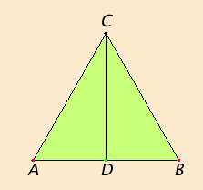

<html>
<head><title>Test View - polygon;equilateralTriangle (propI10)</title></head>
<body>
<canvas id="canvasId" style="width:360px; height:280px;"></canvas>
<script src="../../../dist/bundle.js" type="text/javascript"></script>

<!--applet code=Geometry codebase="../../Geometry" archive=Geometry.zip width=360 height=280>

<param name=background value="35,19,100">
<param name=title value="I.10">
<param name=e[1] value="A;point;free;40,170">
<param name=e[2] value="B;point;free;200,170">
<param name=e[3] value="ABC;polygon;equilateralTriangle;A,B;0;0;black;random">
<param name=e[4] value="C;point;vertex;ABC,3;black;green">
<param name=e[5] value="D;point;midpoint;A,B;black;green">
<param name=e[6] value="CD;line;connect;C,D;0;0;blue">
</applet-->

<script type="text/javascript">
    let E = geomlib.E;
    geomlib.init({
        background: '#ffe9cd',
        title: "I.10 — Bisect a finite straight line",
        canvasid: "canvasId",
        elements: [
            { name: "A",   construction: E.Point.free,                  params: [40, 170] },
            { name: "B",   construction: E.Point.free,                  params: [200, 170] },
            { name: "ABC", construction: E.Polygon.equilateralTriangle,  params: ["A", "B"],
              edgeColor: "black" },
            { name: "C",   construction: E.Point.vertex,                params: ["ABC", 3],
              nameColor: "black", vertexColor: "green" },
            { name: "D",   construction: E.Point.midpoint,              params: ["A", "B"],
              nameColor: "black", vertexColor: "green" },
            { name: "CD",  construction: E.Line.connect,                params: ["C", "D"],
              edgeColor: "blue" },
        ]
    });
</script>
</body>
</html>
